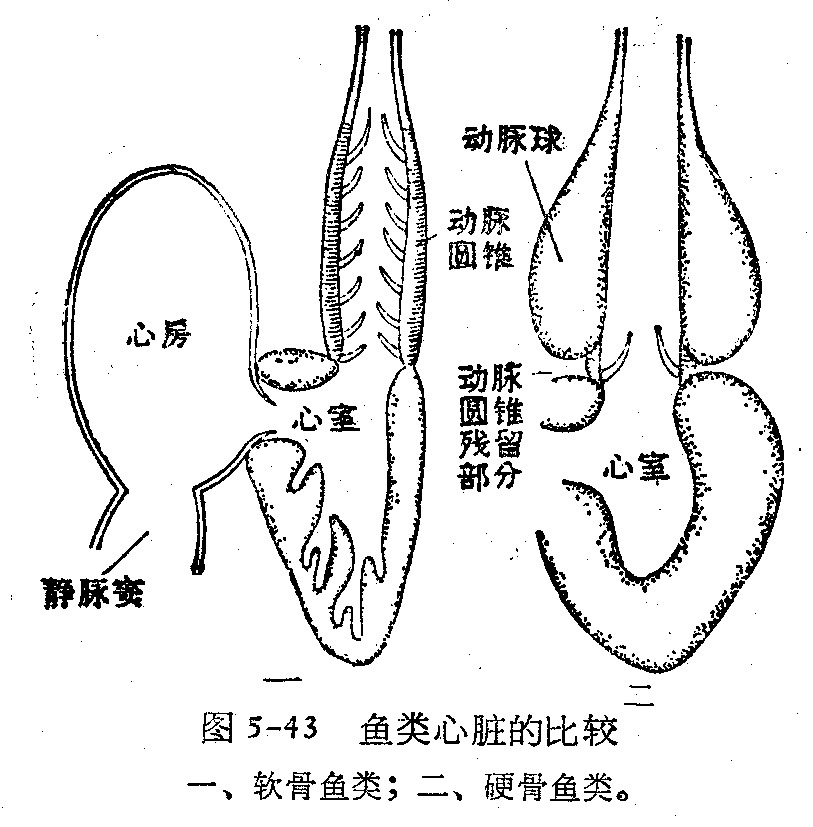

SECTION 14-4 · 软骨鱼纲 vs 硬骨鱼纲
软骨鱼与硬骨鱼的比较
软骨鱼纲与硬骨鱼纲是鱼纲中两大并列类群。二者分别起源于不同的祖先，相互间没有直接的演化关系——软骨鱼出现于泥盆纪约 3.7 亿年前，其软骨结构可能是 次生性起源（由硬骨祖先退化而来）；硬骨鱼出现于志留纪晚期~泥盆纪早期约 3.95 亿年前，早于软骨鱼。
下表系统对比两类鱼在 骨骼、鳞片、鳃、鳔、肠、尾型、循环、生殖、渗透调节 等各方面的差异，是竞赛核心考点。
关键认知：软骨鱼并非"祖先型"，其软骨可能是次生的。两纲平行演化，无祖裔关系。
一、软骨鱼纲 vs 硬骨鱼纲 总对比表
| 比较项目 | 软骨鱼纲（鲨·鳐·银鲛） | 硬骨鱼纲（鲤·鲈·鲟·肺鱼等） |
|---|---|---|
| 骨骼 | 软骨（有钙盐沉着），终生软骨 | 硬骨，骨化程度高 |
| 脊索 | 椎体间残存念珠状脊索 | 脊索退化（低等类群如鲟、肺鱼仍存） |
| 口位 | 口腹位 | 口端位（多为） |
| 内鼻孔 | 无 | 有或无（肉鳍亚纲有，辐鳍亚纲无） |
| 鳞片 | 盾鳞（与齿同源，外+中胚层）或无鳞 | 硬鳞/圆鳞/栉鳞（中胚层骨质鳞）或裸露 |
| 鳃 | 鳃裂直接开口体外（外鳃），5~7 对 | 有鳃盖（鳃盖骨），4 对鳃裂（内鳃） |
| 鳃间隔 | 发达，延续至鳃丝端部 | 退化甚至消失 |
| 鳔 | 无鳔（靠肝脏鲨烯浮力） | 多数有鳔（调比重，肺鱼可呼吸） |
| 肠 | 具螺旋瓣（十二指肠+螺旋瓣肠） | 多数无螺旋瓣（低等类群仍有） |
| 泄殖腔 | 有（板鳃）或无（全头） | 无，肛门与泄殖孔分别开口 |
| 尾型 | 歪尾型 | 正尾型（大多） |
| 循环-心脏 | 一心房一心室 | 一心房一心室 |
| 动脉圆锥/球 | 动脉圆锥（心室延伸，能搏动，有瓣膜） | 低等硬骨鱼有动脉圆锥；真骨鱼为动脉球（腹大动脉基部膨大，不能搏动，无瓣膜） |
| 循环方式 | 单循环 | 单循环 |
| 生殖 | 体内受精，雄性具鳍脚 | 体外受精（大多），无鳍脚 |
| 发育方式 | 卵生/卵胎生/假胎生 | 体外发育为主，少数卵胎生 |
| 产卵量/成活率 | 产卵量少，成活率高 | 产卵量大，成活率低 |
| 含N废物 | 尿素为主 | 氨/铵盐为主 |
| 渗透调节 | 血液保留尿素 + 直肠腺排盐 | 海水种 泌氯腺（鳃）排盐；淡水种鳃吸盐 |
| 眼睑/泪腺 | 无 | 无 |
| 视觉 | 晶体靠后，远视 | 晶体靠前，近视 |
| 分类 | 板鳃亚纲 + 全头亚纲 | 肉鳍亚纲 + 辐鳍亚纲 |
| 种数 | 约 846 种 | 约 21000+ 种（占鱼类 90%+） |
动脉圆锥 vs 动脉球（必辨）：二者都位于心室与腹大动脉之间，但来源、结构和分布不同。
- 动脉圆锥：由心室延伸而成，壁厚，能搏动，内有瓣膜；见于圆口类、软骨鱼及低等硬骨鱼（总鳍鱼、肺鱼、硬鳞鱼）。
- 动脉球：由腹大动脉基部膨大而成，壁薄，不能搏动，无瓣膜；为真骨总目特有。
简言之，动脉圆锥是心室的一部分，参与心脏射血；动脉球仅起缓冲血流压力的作用。
来源不同：动脉圆锥=心室延伸；动脉球=腹大动脉膨大。功能不同：动脉圆锥能搏动；动脉球不能搏动。

快速判别口诀：
- 软骨鱼：腹口歪尾盾鳞，鳃裂外露无鳔，螺旋瓣肠有鳍脚，体内受精卵胎生，尿素直肠腺。
- 硬骨鱼：端口正尾骨鳞，鳃盖内鳃多有鳔，无螺旋瓣无鳍脚，体外受精产卵多，氨盐泌氯腺。
两类鱼心脏都是一房一室、都是单循环——这是它们的"共性"，区别在动脉圆锥vs动脉球等细节。
二、鱼类分类及主要特征总表（表14-14-1）
下表整合软骨鱼纲（板鳃亚纲、全头亚纲）与硬骨鱼纲（总鳍亚纲、肺鱼亚纲、辐鳍亚纲之硬鳞/全骨/真骨总目）的 15 项主要特征，是竞赛最高频的对比性综合表，务必熟悉每一行。
此表横向比较7个类群，是辨别各类群演化地位的"金标准"。重点看：脊索、椎体、尾鳍、鳃盖、鳃间隔、内鼻孔、鳔、动脉圆锥/球、螺旋瓣、鳍脚、泄殖腔。
| 分类 | 软骨鱼纲 | 硬骨鱼纲 | |||
|---|---|---|---|---|---|
| 板鳃亚纲 | 全头亚纲 | 总鳍亚纲 | 肺鱼亚纲 | 辐鳍亚纲 | |
| 特征 | 鲨·鳐 | 银鲛 | 矛尾鱼 | 非洲/美洲/澳洲肺鱼 | 硬鳞/全骨/真骨总目 |
| 脊索 | 有 | 有 | 有 | 有 | 硬鳞总目有；全骨/真骨无 |
| 骨骼 | 软骨 | 软骨 | 硬骨 | 大多软骨 | 硬鳞大多软骨；全骨/真骨硬骨 |
| 椎体 | 有 | 有 | 无 | 无 | 硬鳞无；全骨/真骨有 |
| 尾鳍型 | 歪尾 | 歪尾 | 矛头尾 | 原尾 | 硬鳞歪尾/原尾；全骨微歪尾；真骨正尾 |
| 鱼鳞 | 盾鳞 | 无鳞 | 圆鳞 | 圆鳞 | 硬鳞/硬鳞或圆鳞/圆鳞或栉鳞 |
| 鳃盖 | 无 | 有 | 无 | 有 | 有 |
| 鳃间隔 | 长于鳃丝 | ≈等长鳃丝 | 退化 | 退化 | 退化→极其退化或无 |
| 内鼻孔 | 无 | 无 | 次生性消失 | 有 | 无 |
| 鳔 | 无 | 无 | 次生性消失 | 有，可呼吸空气 | 有（全骨可呼吸空气） |
| 动脉圆锥 | 有 | 有 | 有 | 有 | 硬鳞有；全骨退化；真骨无 |
| 动脉球 | 无 | 无 | 无 | 无 | 真骨总目有 |
| 肠螺旋瓣 | 有 | 有 | 有 | 有 | 硬鳞有；全骨有；真骨无 |
| 雄性鳍脚 | 有 | 有 | 无 | 无 | 无 |
| 泄殖腔 | 有 | 无 | 次生性退化 | 有 | 无 |
| 代表动物 | 猫鲨 | 银鲛 | 矛尾鱼 | 非洲肺鱼 | 中华鲟/雀鳝/鲤鱼 |
读表规律（演化趋势）：
- 脊索→椎体：低等类群脊索留存无椎体（总鳍、肺鱼、硬鳞），高等类群椎体发达（全骨、真骨）。
- 动脉圆锥→动脉球：软骨鱼/低等硬骨鱼有动脉圆锥；真骨鱼动脉圆锥消失代之以动脉球。
- 螺旋瓣：有→无：低等类群（软骨鱼、总鳍、肺鱼、硬鳞、全骨）有螺旋瓣；真骨鱼无。
- 尾型：歪尾→正尾：原始类群歪尾/原尾，高等真骨鱼正尾。
- 鳃间隔：发达→消失：软骨鱼最发达，真骨鱼消失。
- 内鼻孔：仅肉鳍亚纲（肺鱼）有，是登陆演化的关键；总鳍鱼（矛尾鱼）次生性消失。
记规律胜过死记表格：低等=脊索+歪尾+螺旋瓣+动脉圆锥+鳃间隔；高等=椎体+正尾+无螺旋瓣+动脉球+鳃间隔消失。
比较专题核心记忆点
- 两纲无祖裔关系，平行演化；软骨鱼软骨可能是次生起源。
- 七大判别特征：骨骼(软/硬)、鳞(盾/硬圆栉)、鳃(外露/鳃盖)、鳔(无/有)、肠(螺旋瓣/无)、尾(歪/正)、受精(体内/体外)。
- 循环共性：均一心房一心室、单循环；差异在动脉圆锥(软骨鱼/低等)vs动脉球(真骨)。
- 渗透调节差异：软骨鱼=尿素+直肠腺；硬骨鱼=泌氯腺(海)/鳃吸盐(淡)。
- 生殖差异：软骨鱼体内受精+鳍脚+卵胎生/假胎生；硬骨鱼体外受精+产卵量大。
- 读总表抓演化趋势：祖征(脊索/歪尾/螺旋瓣/动脉圆锥/鳃间隔)在低等保留；离征(椎体/正尾/动脉球/鳃盖)在高等出现。